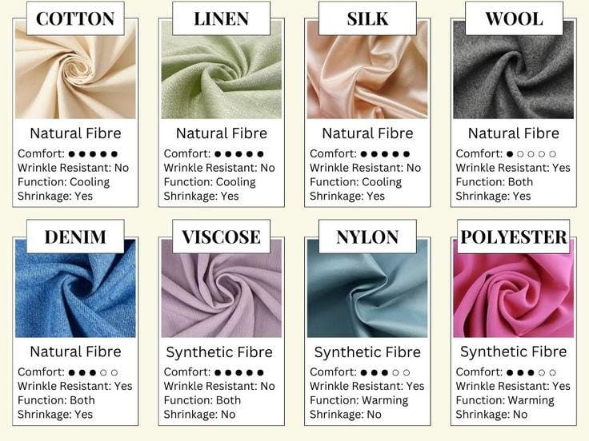
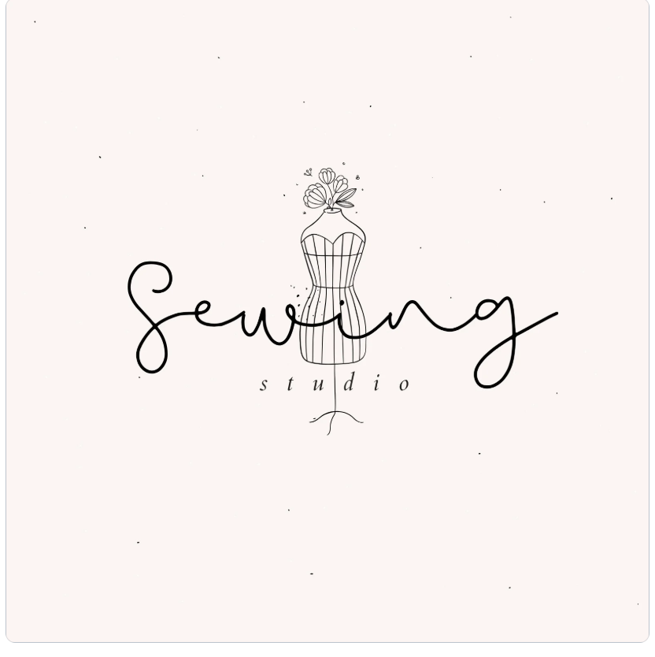
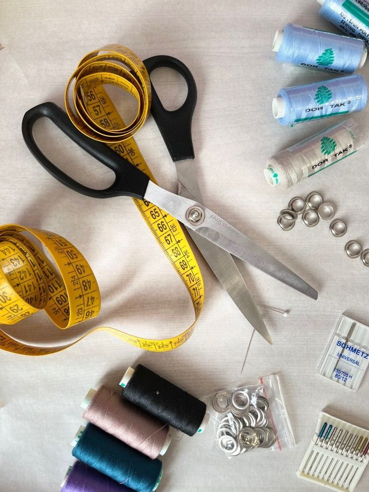

Fabrics are an essential part of designing and manufacturing clothing, as they significantly impact the beauty of the garment after stitching. The importance of fabrics lies in several factors: they determine the quality of the clothing, its suitability for daily use, and its ease of washing. When selecting fabrics for dresses, considerations such as the fabric's color and its harmony with other materials used in the design are crucial to achieving the desired final look. Additionally, the texture and weight of the fabric play a vital role in determining the comfort and drape of the finished garment.
Click hereThe Basic Mannequin
The basic mannequin is simply a tool that helps designers sketch a large number of ideas in a short amount of time. Instead of drawing each design fully with the body of a fashion model, the basic mannequin is drawn once, and the design details are added to it repeatedly afterward. While learning to draw the mannequin is not a requirement for a fashion designer, it is beneficial as it allows the designer to better express their ideas. Additionally,
a designer trained in drawing mannequins can easily modify ready-made shapes as desired.

Building a brand and marketing in fashion requires defining the brand's vision and values, creating a cohesive visual identity that includes a unique name, logo, and compelling story. For fashion marketing on social media, focus on producing high-quality visual content, engaging with the audience, leveraging paid ads, and collaborating with influencers. Virtual fashion shows can be presented using virtual or augmented reality technologies to reach a broader audience in innovative ways. Successful examples include Gucci’s use of digital fashion technologies and Burberry’s focus on sustainability and brand renewal.
Click here
various types of patterns are used depending on the required production stages and the nature of the product. The primary purpose of using patterns is to cut fabrics and determine the precise shapes and measurements of garments and outfits. Patterns are prepared based on the desired design and include all the measurements and detailed specifications needed for accurate garment stitching.
Sewing is the process of joining fabrics together using a needle and thread. It is one of the oldest manual skills humans have used to create clothing and coverings.
Click here